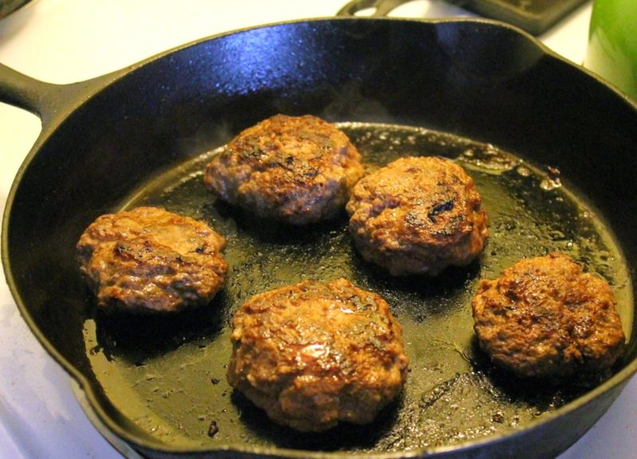

Venison Sausage

Delicious, homemade venison sausage balls that will leave you speechless
If you love meat, you will love these sausage balls. It is a very simple recipe but yet is full of flavor.
The venison alone is great but we add in bacon to give it that extra taste.
Ingredients
- 1 pound ground venison
- 8 ounces bacon, minced
- 1 teaspoon ground sage
- ½ teaspoon ground ginger
- ¼ teaspoon pepper
- ¾ teaspoon onion salt
Directions
- Combine the venison, bacon, sage, ginger, pepper, and onion salt in a large bowl; mix well. Shape into 12 patties using about 1/4 cup of mixture per patty. Patties can either be pan-fried or frozen for later use.